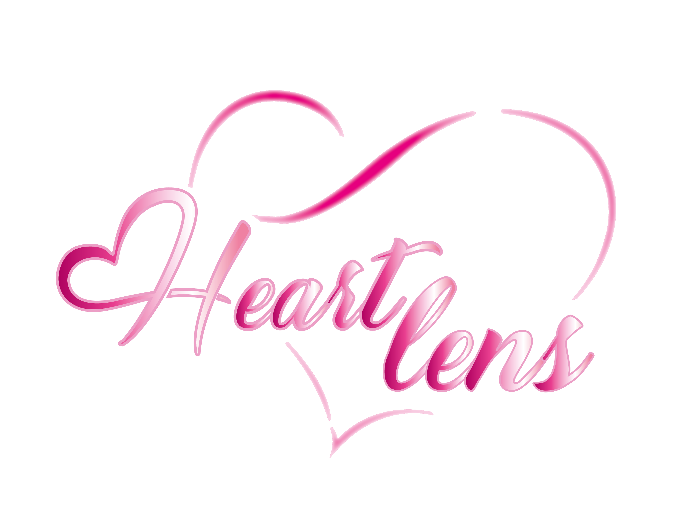
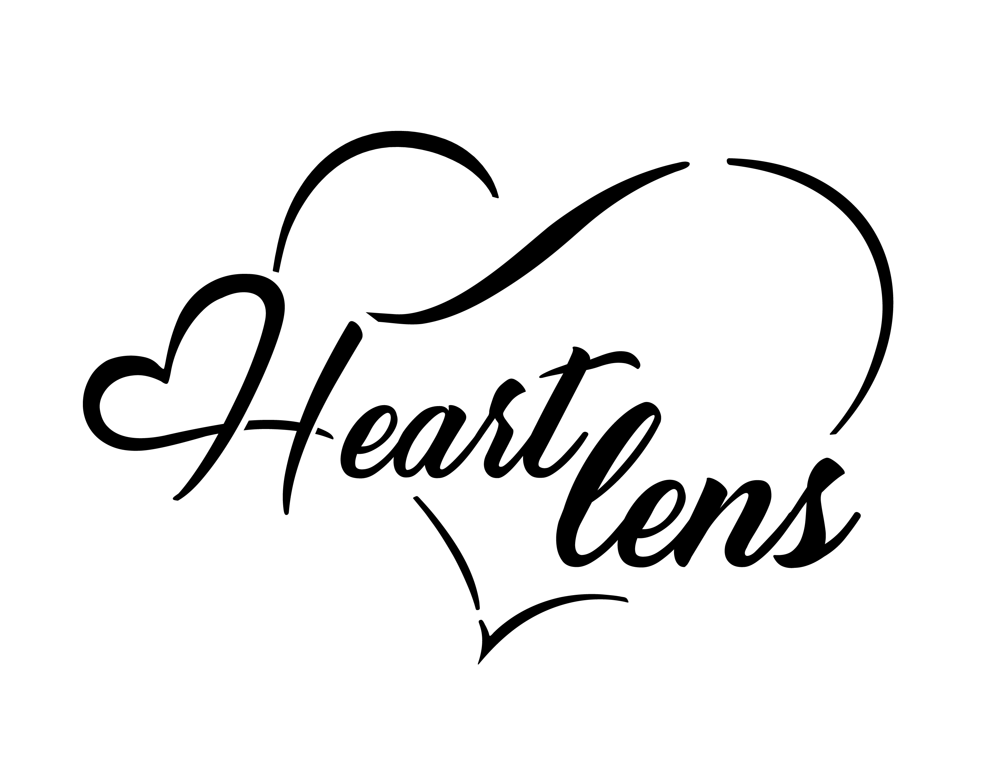

HeartLens
Création d’une identité de marque dédiée aux lentilles de couleur fantaisie, mêlant direction artistique, design graphique et motion design afin de développer un univers visuel distinctif, immersif et contemporain.

La première version du logo
La première version ressemble à la deuxième, mais son dégradé de couleurs est moins harmonieux.

La deuxième version du logo
À l’inverse, le deuxième logo présente un dégradé de couleurs harmonieux et fluide.

Version Noir du logo
Le logo noir permet d’assurer une bonne visibilité sur les fonds blancs.

Palette de couleurs
La palette de couleurs s’inspire des fleurs de sakura, avec des tons roses et mauves évoquant la fantaisie et la délicatesse des lentilles colorées.
Applications et mises en situation

Première vision
Le premier packaging propose une présentation classique, directement inspirée des boîtes de lentilles déjà présentes sur le marché.

Vision commerciale
Ce mockup présente le packaging dans un contexte commercial, avec un potentiel pour une future campagne publicitaire.

Vision de dessus
Cette vue de dessus met en valeur plusieurs packagings, idéale pour une future campagne publicitaire.

Vision finale
Packaging empilé – Visuel de clôture publicitaire